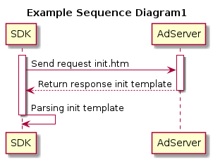

plantuml 学习笔记
Table of Contents
1 PlantUML简介
PlantUML是一个开源的用以高效构建UML图的工具。他可以嵌入多种编辑器及IDE中使用，具体支持哪些请戳这里.
UML可以构建以下模型图
- Sequence diagram 时序图
- Usecase diagram 用例图
- Class diagram 类图
- Activity diagram 活动图
- Component diagram 组件图
- State diagram 状态图
- Object diagram 对象图
2 Sequence diagram
一种UML行为图。它通过描述对象之间发送消息的时间顺序显示多个对象之间的动态协作。它可以表示用例的行为顺序，当执行一个用例行为时，时序图中的每条消息对应了一个类操作或状态机中引起转换的触发事件。1 至于时序图的作用及各种模型图的含义，本文篇幅有限不做详细介绍。想了解更多就点击这里.
'这是一个注释，plantuml注释以单引号开头 /'这也是一个注释'/ title Example Sequence Diagram1 '定义了一个对象 activate SDK activate AdServer 'SDK向AdServer发送了一个消息 SDK -> AdServer : Send request init.htm AdServer --> SDK : Return response init template 'AdServer生命线结束 deactivate AdServer 'SDK向自身发送了一个消息 SDK -> SDK : Parsing init template deactivate SDK

在Plantuml中可以使用不同的模型图描述不同的对象。
title Example Squence Diagram2 actor User1 boundary SDK control AdServer entity Ad database BJDB User1 -> SDK :activite SDK -> AdServer : Send request ad.htm AdServer -> Ad : Selected Ad AdServer -> BJDB : Load data BJDB --> AdServer : Return ad data AdServer --> SDK : Return ad template SDK --> User1 : Return ad template deactivate User1 deactivate SDK deactivate AdServer deactivate Ad deactivate BJDB

-未完待续-